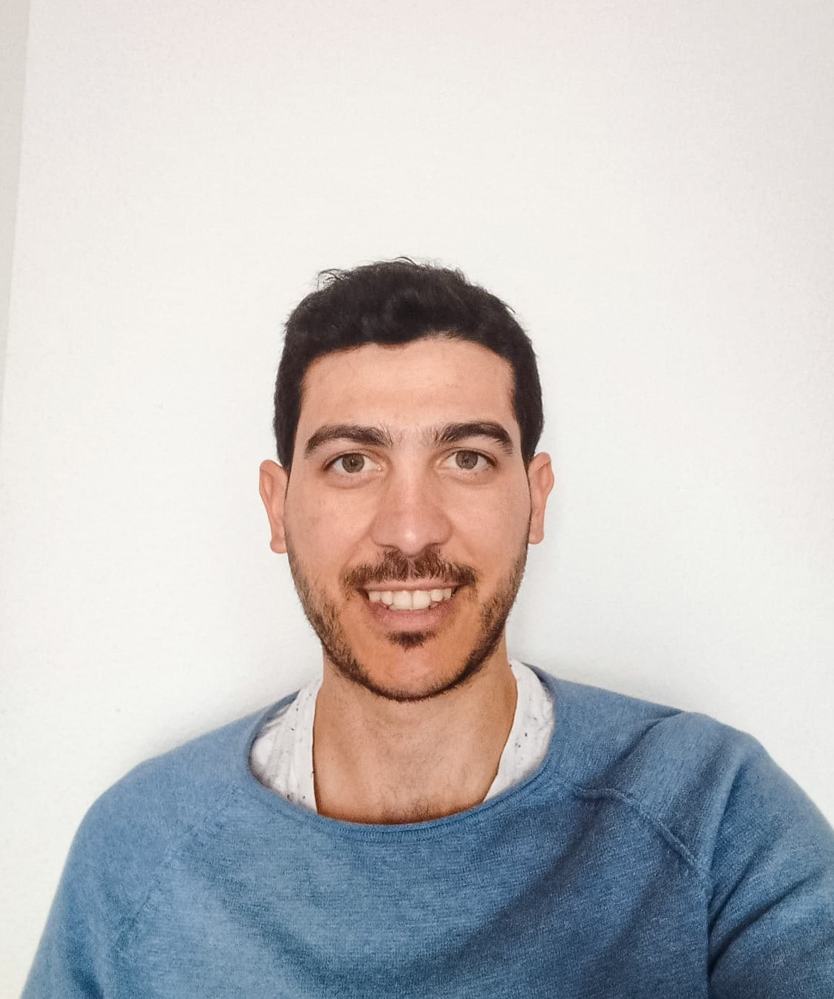

Since 2024, I have been an Assistant Professor with the Department of Mathematics at the Universidad de Córdoba (Spain). Prior to my current role, I worked as a postdoctoral researcher at the Universities of Granada and Seville, and completed a research stay at Imperial College London. I earned my PhD in Physics from the Universidad Autónoma de Madrid in 2021, specializing in the modeling and simulation of atomic and molecular systems at the Madrid Institute of Materials Science (ICMM-CSIC).
My research interests lie at the intersection of physical simulations, numerical methods, and artificial intelligence. During my predoctoral period, I acquired solid experience in atomistic simulations, including Monte Carlo methods, classical molecular dynamics, and path-integral quantum molecular dynamics. Recently, my work has focused on developing hybrid methodologies that integrate machine learning techniques with traditional numerical methods to solve complex, real-world scientific problems. Lately, I have been exploring the application of physics-informed neural networks (PINNs) and graph neural networks (GNNs) to various scientific challenges. The versatile nature of these approaches has allowed me to build a highly interdisciplinary profile, actively collaborating with research groups in physics, chemistry, engineering, and medicine to address pressing challenges in materials science, energy efficiency, and healthcare.
In my spare time, I love traveling, exploring nature (camping, trekking...), and practicing outdoor sports like cycling.
Throughout my experience as a university lecturer, I have taught various courses in Physics, Mathematics, and Programming at the Universidad Autónoma de Madrid (UAM), the Universidad de Granada (UGR), and the Universidad de Córdoba (UCO).
If you would like to schedule an office hour or a tutoring session, please feel free to email me here .
Here you can find a list of the Bachelor's (TFG) and Master's (TFM) theses I have supervised. If you are looking for an advisor and are interested in my research areas or would like to collaborate, please feel free to reach out so we can find a project of mutual interest.
If you would like to collaborate, have any inquiries, or wish to propose a project, please feel free to get in touch: